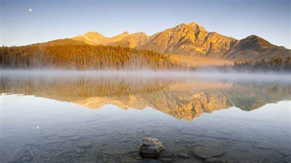

travel Title
travel Description
The meaning of travel refers to traveling far away, going to other places for business or sightseeing. Go for a walk out of town. Different from tourism.
The difference between traveling and traveling is that traveling involves observing the scenery and things around you, traveling thousands of miles, and reading thousands of books.
Relative to others, it refers to walking. Tourism refers to playing, usually in groups, and is very brief in terms of time. Tourism is a travel and sightseeing activity.
Life Reflection: Cherish Every Present Moment
Title description, JAN 1, 2024

It is a complex social phenomenon, and travel involves various social fields such as politics, economy, culture, history, geography, and law.
Tourism is also a form of entertainment, and any trip to other places can be considered. The World Tourism Organization defines travel as someone traveling at least 55 miles (88.5 kilometers) away from home.
Project parameters include project scope, quality, cost, time, and resources. The Project Management Institute (PMI) defines a project as a systematic effort to create unique products, services, or outcomes, as stated in its published Project Management Body of Knowledge (PMBOK). The following activities can all be referred to as a project:
Life is always full of variables and challenges, but it is these experiences that make us more mature and strong.
In my life reflections, I have recorded my thoughts and insights on life.
About Me

Welcome to my personal website, where I record my growth and share my life insights.
I love traveling and capturing the beauty of the world with my camera; I love writing and enjoy expressing my inner emotions through words.
Here, you can learn about my story and also share your excitement with me. I hope we can find resonance and grow in this small space.
Popular Posts
1. Develop or operate a product;
2. Plan to hold large-scale events (such as planning and organizing weddings, large-scale international conferences, etc.);
3. Plan a self driving tour;
4. Consulting, development, implementation, and training of ERP
5. Establish and operate a sub brand.
Learn More